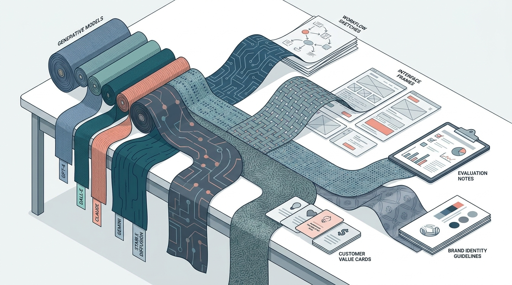

AI Product Development
Software Has Seasons Now: Fashion-Driven Development for Generative AI Products

Image generated by Google Gemini (gemini-3-pro-image-preview)
AI Product Development

Image generated by Google Gemini (gemini-3-pro-image-preview)